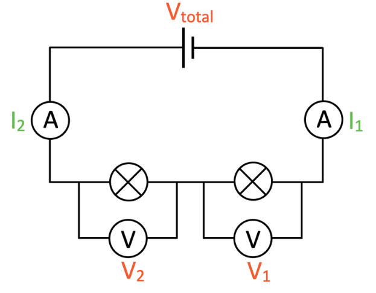

electercity
Definitions
electricity
It is created by the flow of electrons and is a form of energy which can flow from 1 place to another.
circuit
a closed path containing a collection of components connected to a power source, which allows a charge to flow.
(I) current
a measure of how fast a charge (electrons) moves in a circuit.
(V) voltage
the difference between potential energy between 2 points in a circuit.
(R) resistance
The main or SI unit of resistance is ohms(Ω).A measure of the opposition to current flow in an electrical circuit.
ammeter
A device that measures an electric current.
Voltmeter
A device which measures the potential difference (voltage).
resistor
An electrical component that limits or regulates the flow of electrical current in an electronic circuit.
amplifier
An electronic component that boosts electrical current.
transistor
Transistor an electronic component that can act as a switch or an amplifier.
ohm's law
A law that states that the current flowing through a conductor between two points is directly proportional to the voltage across the two points.
I - Current - Measured in amperes.
V - Voltage - Measured in volts.
R - Resistance - Measured in ohms.
series & parallel
parallel circuits
A circuit in which all components are connected between the same points, so the current has more than one path to take. These components are connected side by side, dividing the current.
series circuit
A circuit in which components are arranged in a chain, so the current has only one path to take. They are basically arranged one after another.
how to identify parallel and series circuits?
Run your finger through the circuit or diagram, if you are able to pass through every component back to the starting point without having to retrace your path. Run your finger through the circuit or diagram, if you are able to pass through every component but have to retrace your path it is a parallel circuit.
| series circut | parallel circuit |
|---|---|
| Current travels in one direction, or in a loop. | Current can take more than 1 path. |
| If one bulb or component breaks, the entire circuit is out of order. | If one bulb breaks others will usually work. |
| Voltage is different in bulbs. | Voltage is the same in each bulb. |
| All bulbs have different brightness. | Same brightness in all bulbs. |
| One switch controls all the bulbs. | Different switches control different bulbs. |
| Current is the same in all bulbs. | Current differs in all bulbs. |
drawing circuits
examples
Example of a series Circuit composed of 2 voltmeters, 2 ammeters and 2 bulbs along with a battery.
